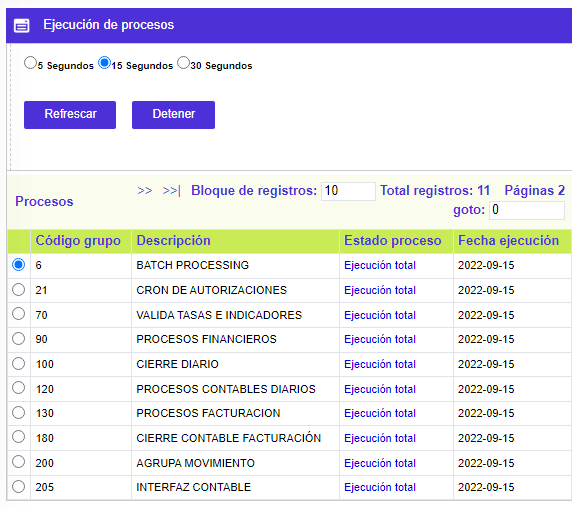
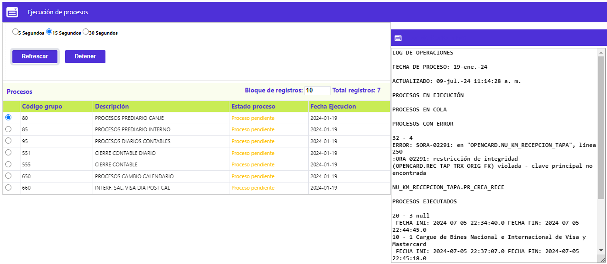
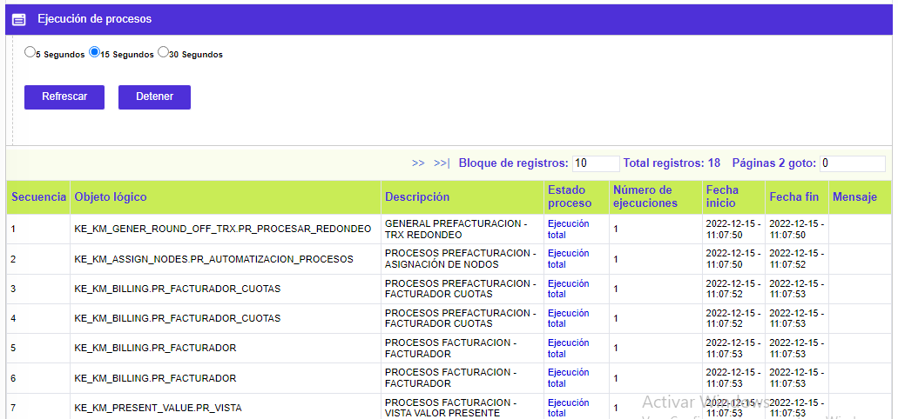

|
Ejecución grupos en malla |
Esta opción muestra todos aquellos grupos que hayan sido marcados como Obligatorio en la opción Definición grupos de procesos. De acuerdo a esto, esta opción sólo nos muestra los grupos de procesos a ejecutar automáticamente.
La pantalla principal se divide en dos partes en la cuales se encontrarán los Grupos de procesos a la izquierda, así como se muestra en la siguiente imagen.
Por otro lado , la opción cuenta también con el vínculo de Procesos que nos permitirá consultar el detalle de algunos de los procesos pertenecientes al grupo que por alguna razón hayan presentado error en su ejecución.

A la derecha de esta pantalla se ubica una ventana que funciona como log de operaciones, describiendo las acciones y resultados de cada uno de los procesos que han sido ejecutados.
A través de esta pantalla principal el usuario debe ejecutar todos los Grupos de procesos a través del botón Ejecutar. De esta forma el sistema tomará todos los procesos pertenecientes a estos Grupos, ejecutándolos de acuerdo a la parametrización de precedentes realizada en la opción Definición grupos de procesos.
El sistema refrescará la pantalla junto con el log de operaciones de acuerdo a los rangos de tiempo definidos en la parte superior. Estos pueden establecerse entre 5, 15 ó 30 segundos. Por defecto estos rangos están apagados y sólo se activan al seleccionar uno de ellos y luego usar los botones Detener y luego Refrescar.

Antes de iniciar el cargue de un grupo en el día, el sistema los muestra con el campo Estado proceso en blanco. Luego éste varia de acuerdo al estado de los Procesos ejecutados por cada Grupo.
Proceso en ejecución: El sistema está corriendo el paquete del proceso.
Ejecución parcial: El sistema ha presentado algún error que puede ser consultado directamente en el log de operaciones o en el Histórico de procesos.
Ejecución total: El proceso ha finalizado exitosamente.
Proceso pendiente o Proceso en cola: El sistema identifica estos procesos como pendientes por procesar.
Procesos: Este hipervínculo le permite al usuario la consulta del detalle de la ejecución de cada uno de los Procesos pertenecientes al Grupo seleccionado en la pantalla principal. Se usa más con el propósito de consultar un Proceso en el momento de haber presentado algun error, pues la descripción de éste se muestra a nivel del campo Mensaje.
Es importante tener en cuenta que a diferencia de la opción Ejecución grupos independientes, esta opción no permite la ejecución de los procesos uno a uno, sólo de todos los Grupos que hayan sido marcados como Obligatorio en la opción Definición grupos de procesos.
Tal como aplica para la ejecución de Grupos descrita arriba, esta pantalla permite la actualización a través de los mismos rangos de 5, 15 ó 30 segundos, y mostrando el estado de los procesos y su Número de ejecuciones. En caso de presentarse algún error, será mostrado en el campo Mensaje de esta misma pantalla.
